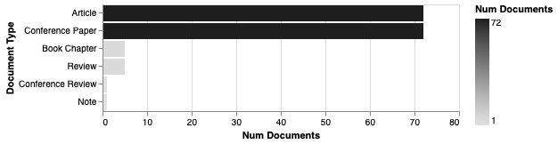
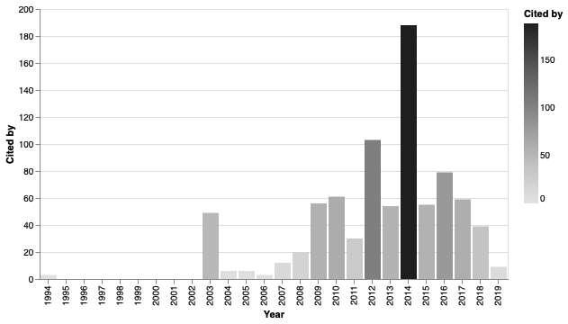
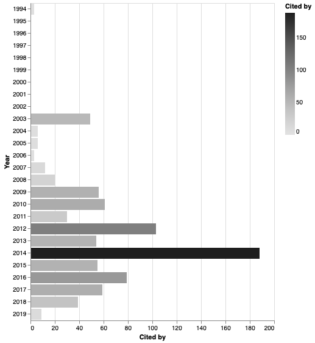

Basic Analysis¶
In this part, a basic analysis of the bibliographical information is done. The term ‘basic’ refers to analyses that can be made by executing queries over a field of the dataframe.
[1]:
import pandas as pd
[2]:
records = pd.read_json('demo-keywords.json', orient='records', lines=True)
Number of documents per document type¶
[3]:
from techMiner import documentsByTerm
[4]:
documentsByTerm(records, 'Document Type')
[4]:
| Document Type | Num Documents | |
|---|---|---|
| 0 | Article | 72 |
| 2 | Conference Paper | 72 |
| 1 | Book Chapter | 5 |
| 5 | Review | 5 |
| 3 | Conference Review | 1 |
| 4 | Note | 1 |
[5]:
documentsByTerm(records, 'Document Type').plot.barh('Document Type', 'Num Documents', color='gray');

[6]:
from techMiner import alt_barh_graph
alt_barh_graph(documentsByTerm(records, 'Document Type'))
[6]:

[7]:
from techMiner import alt_bar_graph
alt_bar_graph(documentsByTerm(records, 'Document Type'))
[7]:

[8]:
from techMiner import sns_barh_plot
sns_barh_plot(documentsByTerm(records, 'Document Type'));

[9]:
from techMiner import sns_bar_plot
sns_bar_plot(documentsByTerm(records, 'Document Type'));

Citations per document¶
[10]:
documentsByTerm(records, 'Cited by')
[10]:
| Cited by | Num Documents | |
|---|---|---|
| 0 | 0 | 61 |
| 1 | 1 | 16 |
| 2 | 2 | 12 |
| 3 | 3 | 10 |
| 7 | 7 | 10 |
| 4 | 4 | 9 |
| 5 | 5 | 6 |
| 6 | 6 | 5 |
| 10 | 11 | 4 |
| 9 | 9 | 3 |
| 18 | 20 | 2 |
| 14 | 15 | 2 |
| 13 | 14 | 2 |
| 12 | 13 | 1 |
| 11 | 12 | 1 |
| 15 | 16 | 1 |
| 16 | 18 | 1 |
| 17 | 19 | 1 |
| 8 | 8 | 1 |
| 19 | 21 | 1 |
| 20 | 23 | 1 |
| 21 | 29 | 1 |
| 22 | 31 | 1 |
| 23 | 38 | 1 |
| 24 | 45 | 1 |
| 25 | 49 | 1 |
| 26 | 105 | 1 |
Number of authors per document¶
[11]:
records['Num Authors'] = records['Author(s) ID'].map(lambda x: len(x.split(';')))
documentsByTerm(records, 'Num Authors')
[11]:
| Num Authors | Num Documents | |
|---|---|---|
| 1 | 2 | 54 |
| 2 | 3 | 41 |
| 3 | 4 | 24 |
| 0 | 1 | 21 |
| 4 | 5 | 11 |
| 5 | 6 | 5 |
Number of documents per source title¶
[12]:
documentsByTerm(records, 'Source title')
[12]:
| Source title | Num Documents | |
|---|---|---|
| 75 | Lecture Notes in Computer Science (including s... | 17 |
| 41 | Expert Systems with Applications | 9 |
| 97 | Quantitative Finance | 9 |
| 26 | Communications in Computer and Information Sci... | 4 |
| 29 | Computational Economics | 3 |
| 95 | Proceedings of the International Joint Confere... | 3 |
| 53 | IEEE Transactions on Neural Networks and Learn... | 3 |
| 19 | Applied Soft Computing Journal | 3 |
| 30 | Computational Intelligence | 2 |
| 100 | Studies in Computational Intelligence | 2 |
| 13 | ACM International Conference Proceeding Series | 2 |
| 86 | Proceedings - 2016 7th International Conferenc... | 2 |
| 93 | Proceedings of the 2018 IEEE Symposium Series ... | 2 |
| 2 | 2012 IEEE Conference on Computational Intellig... | 2 |
| 74 | Lecture Notes in Artificial Intelligence (Subs... | 1 |
| 71 | Journal of Theoretical and Applied Information... | 1 |
| 76 | Neural Computing and Applications | 1 |
| 73 | Knowledge-Based Systems | 1 |
| 77 | Neurocomputing | 1 |
| 72 | Journal of University of Science and Technolog... | 1 |
| 68 | Journal of Financial Econometrics | 1 |
| 70 | Journal of Information and Computational Science | 1 |
| 69 | Journal of Financial Markets | 1 |
| 79 | Physica A: Statistical Mechanics and its Appli... | 1 |
| 67 | Journal of Finance | 1 |
| 66 | Journal of Communications Technology and Elect... | 1 |
| 65 | Journal of Chemical and Pharmaceutical Research | 1 |
| 64 | Journal of Business Economics and Management | 1 |
| 63 | Journal of Behavioral Finance | 1 |
| 62 | Journal of Applied Statistics | 1 |
| ... | ... | ... |
| 6 | 2017 IEEE Symposium Series on Computational In... | 1 |
| 5 | 2016 IEEE Symposium Series on Computational In... | 1 |
| 4 | 2016 IEEE International Conference on Informat... | 1 |
| 3 | 2015 National Conference on Parallel Computing... | 1 |
| 27 | Communications of the ACM | 1 |
| 31 | Computational Management Science | 1 |
| 55 | IEICE Transactions on Information and Systems | 1 |
| 32 | Computational Optimization and Applications | 1 |
| 54 | IEEE/IAFE Conference on Computational Intellig... | 1 |
| 1 | 2005 ICSC Congress on Computational Intelligen... | 1 |
| 52 | IEEE Internet of Things Journal | 1 |
| 51 | IEEE Intelligent Systems | 1 |
| 50 | IEEE Access | 1 |
| 49 | ICEIS 2007 - 9th International Conference on E... | 1 |
| 48 | ICARM 2016 - 2016 International Conference on ... | 1 |
| 47 | Genetic Programming and Evolvable Machines | 1 |
| 46 | GECCO 2013 - Proceedings of the 2013 Genetic a... | 1 |
| 45 | Frontiers of Computer Science in China | 1 |
| 44 | Frontiers of Computer Science | 1 |
| 43 | Forecasting Volatility in the Financial Markets | 1 |
| 42 | Financial Innovation | 1 |
| 40 | ESANN 2011 proceedings, 19th European Symposiu... | 1 |
| 39 | ECTI-CON 2017 - 2017 14th International Confer... | 1 |
| 38 | Dr. Dobb's Journal | 1 |
| 37 | Decision Support Systems | 1 |
| 36 | Data Mining for Business Applications | 1 |
| 35 | Contaduria y Administracion | 1 |
| 34 | Conferences in Research and Practice in Inform... | 1 |
| 33 | Conference of Open Innovation Association, FRUCT | 1 |
| 106 | Xitong Gongcheng Lilun yu Shijian/System Engin... | 1 |
107 rows × 2 columns
Number of documents per author¶
[13]:
documentsByTerm(records, 'Authors', sep=',')
[13]:
| Authors | Num Documents | |
|---|---|---|
| 195 | Maringer D. | 5 |
| 213 | Ng W.L. | 4 |
| 205 | Montana G. | 4 |
| 141 | Kablan A. | 4 |
| 14 | Arévalo A. | 3 |
| 144 | Kanniainen J. | 3 |
| 71 | Debenham J. | 3 |
| 345 | Zhang J. | 3 |
| 132 | Iosifidis A. | 3 |
| 327 | Wang F. | 3 |
| 313 | Tsagaris T. | 3 |
| 94 | Gabbouj M. | 3 |
| 273 | Sandoval J. | 3 |
| 73 | Deng X. | 3 |
| 276 | Sezer O.B. | 2 |
| 79 | Dong K. | 2 |
| 271 | Salmon M. | 2 |
| 0 | Abdunabi T. | 2 |
| 293 | Stone P. | 2 |
| 104 | Gorse D. | 2 |
| 295 | Stübinger J. | 2 |
| 68 | De Castro P.A.L. | 2 |
| 62 | Creamer G. | 2 |
| 59 | Cliff D. | 2 |
| 307 | Tran D.T. | 2 |
| 309 | Trenta F. | 2 |
| 310 | Triantafyllopoulos K. | 2 |
| 268 | Rundo F. | 2 |
| 256 | Raudys A. | 2 |
| 106 | Groth S.S. | 2 |
| ... | ... | ... |
| 108 | Gruver W.A. | 1 |
| 107 | Grottke M. | 1 |
| 105 | Grigoriev D. | 1 |
| 103 | Gonçalves R. | 1 |
| 102 | Gomber P. | 1 |
| 101 | Ghini V. | 1 |
| 100 | Gerding E. | 1 |
| 99 | Gaydadjiev G. | 1 |
| 98 | Gao S. | 1 |
| 119 | Hjalmarsson E. | 1 |
| 120 | Hogenboom F. | 1 |
| 121 | Hoos H. | 1 |
| 133 | Iskrich D. | 1 |
| 142 | Kajiji N. | 1 |
| 140 | Johnson C. | 1 |
| 138 | Jiang Z. | 1 |
| 137 | Jeong G. | 1 |
| 136 | Jasra A. | 1 |
| 135 | Janosek M. | 1 |
| 134 | Jamali H. | 1 |
| 131 | Huang Y. | 1 |
| 122 | Hsiao C.-Y. | 1 |
| 130 | Huang S.-J. | 1 |
| 128 | Huang R. | 1 |
| 127 | Huang Q. | 1 |
| 126 | Huang K.-K. | 1 |
| 125 | Huang H. | 1 |
| 124 | Huang C.-P. | 1 |
| 123 | Hu Y. | 1 |
| 355 | Özdemir A. | 1 |
356 rows × 2 columns
Number of documents per keyword¶
[14]:
documentsByTerm(records, 'Keywords', sep=';')
[14]:
| Keywords | Num Documents | |
|---|---|---|
| 9 | Algorithmic trading | 37 |
| 123 | High frequency trading | 19 |
| 17 | Automated trading | 15 |
| 155 | Machine learning | 13 |
| 55 | Deep learning | 11 |
| 258 | Technical analysis | 9 |
| 327 | multiagent systems | 7 |
| 86 | Financial forecasting | 6 |
| 18 | Automated trading system | 6 |
| 96 | Forecasting | 5 |
| 113 | Genetic algorithm | 5 |
| 247 | Stock market | 5 |
| 342 | regularization | 4 |
| 26 | Big data | 4 |
| 336 | portfolio management | 4 |
| 208 | Portfolio optimization | 4 |
| 10 | Algorithmic trading systems | 4 |
| 306 | directional change | 4 |
| 243 | Statistical arbitrage | 4 |
| 299 | convolutional neural networks | 4 |
| 145 | LSTM | 3 |
| 65 | Efficient market hypothesis | 3 |
| 148 | Limit order book | 3 |
| 287 | agent-based modeling | 3 |
| 100 | Forex | 3 |
| 52 | Decision support system | 3 |
| 48 | Data mining | 3 |
| 104 | Fundamental analysis | 3 |
| 82 | Finance | 3 |
| 295 | classification | 3 |
| ... | ... | ... |
| 117 | Graph mining | 1 |
| 131 | Independent component analysis | 1 |
| 116 | Grammatical evolution | 1 |
| 115 | Gold | 1 |
| 112 | Gaussian Process Kernel | 1 |
| 111 | GMM | 1 |
| 110 | Fuzzy rule based systems | 1 |
| 109 | Fuzzy rule based classification system | 1 |
| 108 | Futures market | 1 |
| 130 | Incremental support vector regression | 1 |
| 132 | Index | 1 |
| 154 | MACD optimization | 1 |
| 143 | Knowledge discovery | 1 |
| 153 | Literature review | 1 |
| 152 | Liquidity shock | 1 |
| 151 | Liquidity risk | 1 |
| 149 | Linterpolative boolean algebra | 1 |
| 147 | Lead–lag structure | 1 |
| 146 | LSTM neural network | 1 |
| 144 | Koopman operator | 1 |
| 142 | Keywords-machine learning | 1 |
| 133 | Indicator selection | 1 |
| 141 | Kaggle challenge | 1 |
| 140 | Japanese yen | 1 |
| 139 | Investors’ mood | 1 |
| 138 | Investments | 1 |
| 137 | Inverse-variance weighting | 1 |
| 136 | Intraday trading | 1 |
| 135 | Intraday Seasonality Observation Model | 1 |
| 360 | well-calibrated forecasts | 1 |
361 rows × 2 columns
Documents per country¶
[15]:
from techMiner import extractCountries
[16]:
records['Country'] = records['Affiliations'].map(lambda x: extractCountries(x))
documentsByTerm(records, 'Country', sep=';')
[16]:
| Country | Num Documents | |
|---|---|---|
| 46 | United Kingdom | 42 |
| 8 | China | 36 |
| 47 | United States | 26 |
| 5 | Brazil | 12 |
| 21 | Italy | 10 |
| 15 | Germany | 9 |
| 6 | Canada | 8 |
| 9 | Colombia | 8 |
| 38 | Spain | 7 |
| 41 | Switzerland | 6 |
| 32 | Russia | 6 |
| 23 | Lithuania | 6 |
| 18 | India | 6 |
| 44 | Turkey | 5 |
| 14 | Finland | 5 |
| 42 | Taiwan | 5 |
| 7 | Chile | 4 |
| 37 | South Korea | 4 |
| 2 | Australia | 4 |
| 19 | Ireland | 4 |
| 13 | Denmark | 4 |
| 3 | Belgium | 3 |
| 26 | Morocco | 3 |
| 40 | Sweden | 3 |
| 30 | Portugal | 3 |
| 17 | Hungary | 3 |
| 1 | Afghanistan | 3 |
| 27 | Netherlands | 2 |
| 28 | New Zealand | 2 |
| 43 | Thailand | 2 |
| 10 | Croatia | 2 |
| 31 | Romania | 2 |
| 16 | Greece | 2 |
| 33 | Saudi Arabia | 2 |
| 12 | Czechia | 2 |
| 35 | Singapore | 2 |
| 22 | Japan | 2 |
| 45 | United Arab Emirates | 1 |
| 39 | Sri Lanka | 1 |
| 0 | 1 | |
| 36 | Slovenia | 1 |
| 34 | Serbia | 1 |
| 29 | Peru | 1 |
| 25 | Mexico | 1 |
| 20 | Israel | 1 |
| 11 | Cyprus | 1 |
| 4 | Bosnia and Herz. | 1 |
| 24 | Malta | 1 |
[18]:
from techMiner import worldmap
worldmap(documentsByTerm(records, 'Country', sep=';'))

Number of documents per year¶
[19]:
from techMiner import documentsByYear
documentsByYear(records)
[19]:
| Year | Num Documents | |
|---|---|---|
| 1994 | 1994 | 1 |
| 1995 | 1995 | 0 |
| 1996 | 1996 | 0 |
| 1997 | 1997 | 0 |
| 1998 | 1998 | 0 |
| 1999 | 1999 | 0 |
| 2000 | 2000 | 0 |
| 2001 | 2001 | 0 |
| 2002 | 2002 | 0 |
| 2003 | 2003 | 2 |
| 2004 | 2004 | 2 |
| 2005 | 2005 | 2 |
| 2006 | 2006 | 2 |
| 2007 | 2007 | 5 |
| 2008 | 2008 | 5 |
| 2009 | 2009 | 6 |
| 2010 | 2010 | 9 |
| 2011 | 2011 | 3 |
| 2012 | 2012 | 17 |
| 2013 | 2013 | 11 |
| 2014 | 2014 | 14 |
| 2015 | 2015 | 8 |
| 2016 | 2016 | 12 |
| 2017 | 2017 | 17 |
| 2018 | 2018 | 19 |
| 2019 | 2019 | 21 |
[20]:
alt_barh_graph(documentsByYear(records))
[20]:

[21]:
alt_bar_graph(documentsByYear(records))
[21]:

[22]:
documentsByYear(records, cumulative=True)
[22]:
| Year | Num Documents | |
|---|---|---|
| 1994 | 1994 | 1 |
| 1995 | 1995 | 1 |
| 1996 | 1996 | 1 |
| 1997 | 1997 | 1 |
| 1998 | 1998 | 1 |
| 1999 | 1999 | 1 |
| 2000 | 2000 | 1 |
| 2001 | 2001 | 1 |
| 2002 | 2002 | 1 |
| 2003 | 2003 | 3 |
| 2004 | 2004 | 5 |
| 2005 | 2005 | 7 |
| 2006 | 2006 | 9 |
| 2007 | 2007 | 14 |
| 2008 | 2008 | 19 |
| 2009 | 2009 | 25 |
| 2010 | 2010 | 34 |
| 2011 | 2011 | 37 |
| 2012 | 2012 | 54 |
| 2013 | 2013 | 65 |
| 2014 | 2014 | 79 |
| 2015 | 2015 | 87 |
| 2016 | 2016 | 99 |
| 2017 | 2017 | 116 |
| 2018 | 2018 | 135 |
| 2019 | 2019 | 156 |
[23]:
alt_barh_graph(documentsByYear(records, cumulative=True))
[23]:

[24]:
alt_bar_graph(documentsByYear(records, cumulative=True))
[24]:

Citations per year¶
[25]:
from techMiner import citationsByYear
citationsByYear(records)
[25]:
| Year | Cited by | |
|---|---|---|
| 1994 | 1994 | 3 |
| 1995 | 1995 | 0 |
| 1996 | 1996 | 0 |
| 1997 | 1997 | 0 |
| 1998 | 1998 | 0 |
| 1999 | 1999 | 0 |
| 2000 | 2000 | 0 |
| 2001 | 2001 | 0 |
| 2002 | 2002 | 0 |
| 2003 | 2003 | 49 |
| 2004 | 2004 | 6 |
| 2005 | 2005 | 6 |
| 2006 | 2006 | 3 |
| 2007 | 2007 | 12 |
| 2008 | 2008 | 20 |
| 2009 | 2009 | 56 |
| 2010 | 2010 | 61 |
| 2011 | 2011 | 30 |
| 2012 | 2012 | 103 |
| 2013 | 2013 | 54 |
| 2014 | 2014 | 188 |
| 2015 | 2015 | 55 |
| 2016 | 2016 | 79 |
| 2017 | 2017 | 59 |
| 2018 | 2018 | 39 |
| 2019 | 2019 | 9 |
[26]:
alt_bar_graph(citationsByYear(records))
[26]:

[27]:
alt_bar_graph(citationsByYear(records, cumulative=True))
[27]:

[28]:
alt_barh_graph(citationsByYear(records))
[28]:

[29]:
alt_barh_graph(citationsByYear(records, cumulative=True))
[29]: